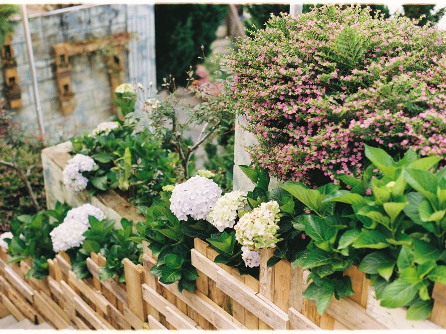
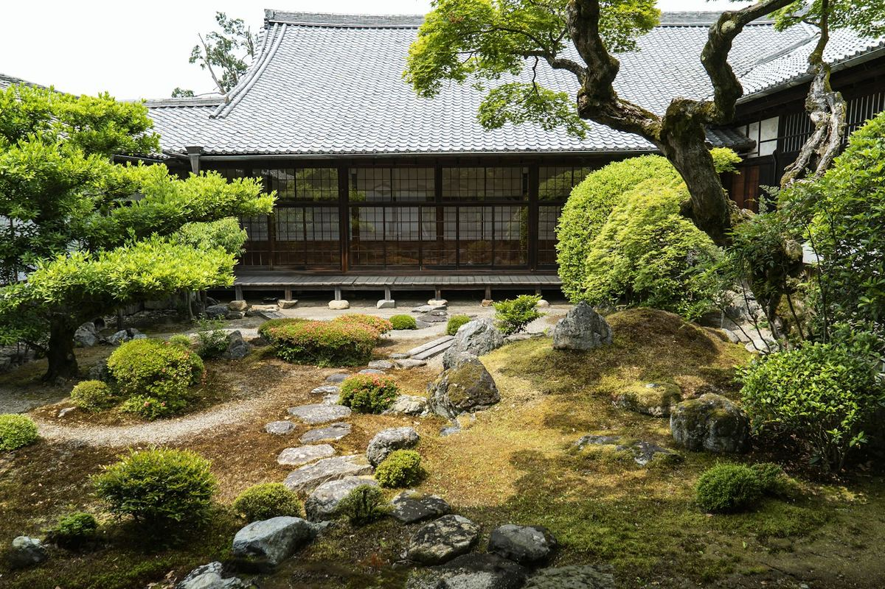

千葉県船橋市 ／ 造園土木業
植栽・剪定から外構工事・公共工事まで。
WORKS
言葉より、仕事を見ていただくのが早いと思います。

※ 掲載している写真は、デモ版のための仮の画像（フリー素材）です。公開までに御社の施工写真に差し替えます。
SERVICE
※ 下の6つは仮置きです。実際に行っている内容に合わせて差し替えます。
庭木・生垣の植え付けから、土壌づくりまで。住まいに合う樹種をご提案します。
庭木の剪定、草刈り、消毒。伸びすぎた木も、樹形を整えて健康に保ちます。
ご希望とお住まいの条件をうかがい、図面をおこしてご提案します。
門まわり、アプローチ、駐車場、ウッドデッキ。建物と庭をつなぐ工事です。
公園・街路樹などの緑地整備。地域の環境づくりに携わっています。
植えて終わりにしません。年間を通じた管理で、美しい状態を保ちます。

ABOUT
株式会社前原園芸は、千葉県船橋市で造園土木業を営んでいます。 個人のお庭の植栽・剪定から、外構工事、公共工事まで、 緑にかかわる仕事を一貫してお引き受けしてきました。
COMPANY
| 会社名 | 株式会社 前原園芸 |
|---|---|
| 代表者 | 宍倉 保之 |
| 所在地 | 〒274-0824 千葉県船橋市前原東5丁目12-4 |
| 電話番号 | 090-6002-5295 |
| 事業内容 | 造園土木業 |
| 創業 | 創業49年 |
| 対応エリア | 千葉県船橋市および近隣 |
CONTACT
お電話でのご相談 090-6002-5295